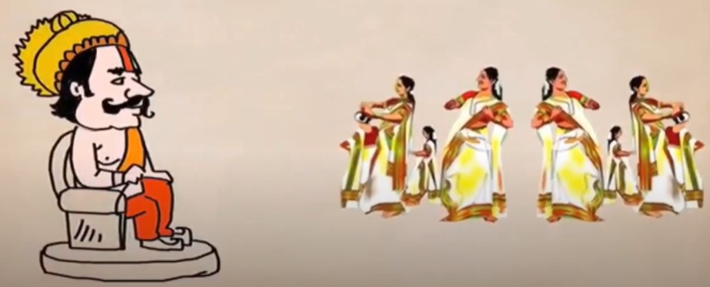
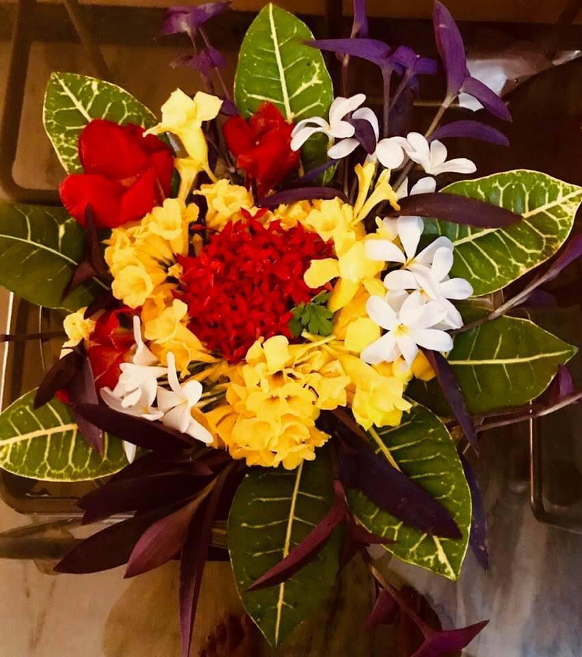
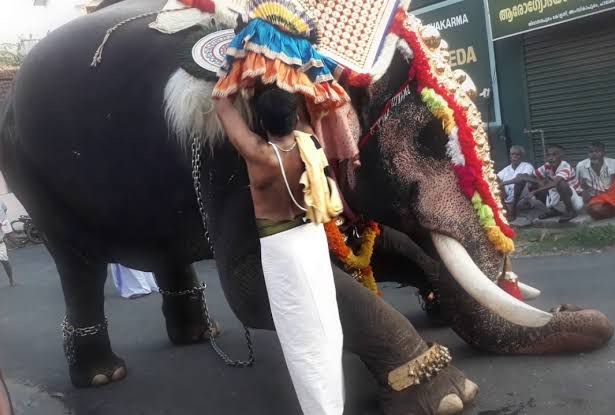
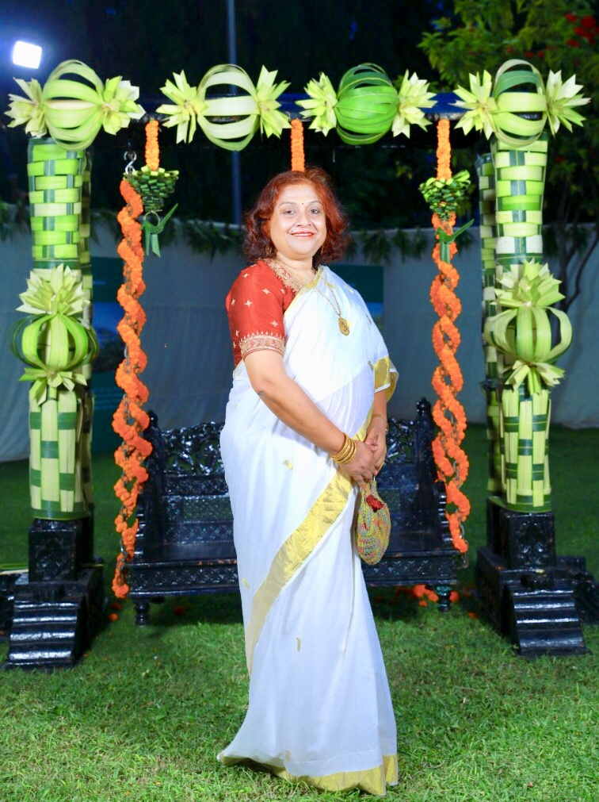
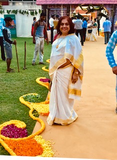
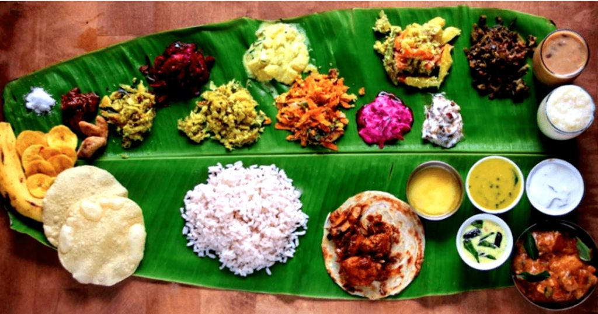
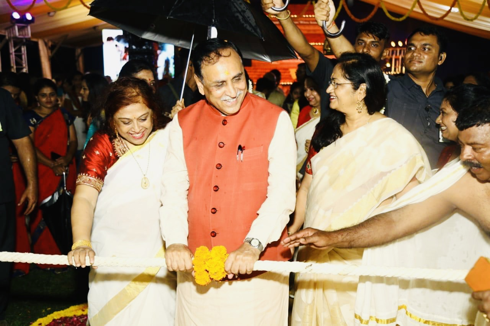

Onam Celebrations

Onam celebrations begin,
Joyful state from within,
His majesty adorns the Royal chair,
Her majesty leads the fanfare.

The Pookalam welcomes you all,
Girls and boys, big and small,
Layers and layers of coloured flowers,
Beauty of the Rangoli overpowers.
First month of The Kollavarsham,
Popularly known as Chingam,
We all gear up to welcome,
King Mahabali to his earthly kingdom.
Legendary King Mahabali,
Known for his justice and charity,
Gave away his vast empire,
To honour Lord Vishnu's desire.
As a reward for his sacrifice,
Blessings got showered from paradise,
The Lord granted him a boon,
An annual visit to earth during harvest boom.
Time for the harvest season,
Merry making with no rhyme or reason,
Onam, a state festival of Kerala,
Celebrated worldwide on a scale gala.
Men indulge in Ambeyyal and Talappanthukali,
Women do the clap dance Kaikottikali,
Sing praises of King Mahabali,
Get ecstatic participating in Vallamkali.
Procession in Thrissur by elephants,
Decorated with flowers and ornaments,
Interacting with people through gestures,
Gives the crowd immense pleasure.

10 days of festival Onam,
Attam, Chithira, Chodi, Vishakam,
Anizham, Triketa, Moolam, Puradom.
Mahabali reaching on Uthradom,
And festivities culminating on Thiruvonam.

A day of prayers, a day of gifts,
Glittering new clothes give an uplift,
Thiruona Sadya is perpetually relished,
In most households, a meal cherished.
A thrilling event today for all,
Beautiful paintings on the wall,
Showcasing the culture and beliefs,
From God's Own Country in brief.

Mohiniattam dance by young girls,
Will leave you awestruck, how they swirl,
The Chenda Melam performance,
Will give you utmost entertainment.
Ladies dressed in Mundu and Neriyatha,
Clapping and Dancing they stay together,
Swaying in the Thiruvathirakali style,
Surely they are all versatile.

The mouth-watering Sadya,
Lovingly prepared by Chef Vaidya,
Served on fresh leaves of banana,
Will surely be a bonanza.
Time for festivities, time for Joy,
All your anxieties please destroy.
An evening to cherish and get soaked,
In merriment with all folks.
